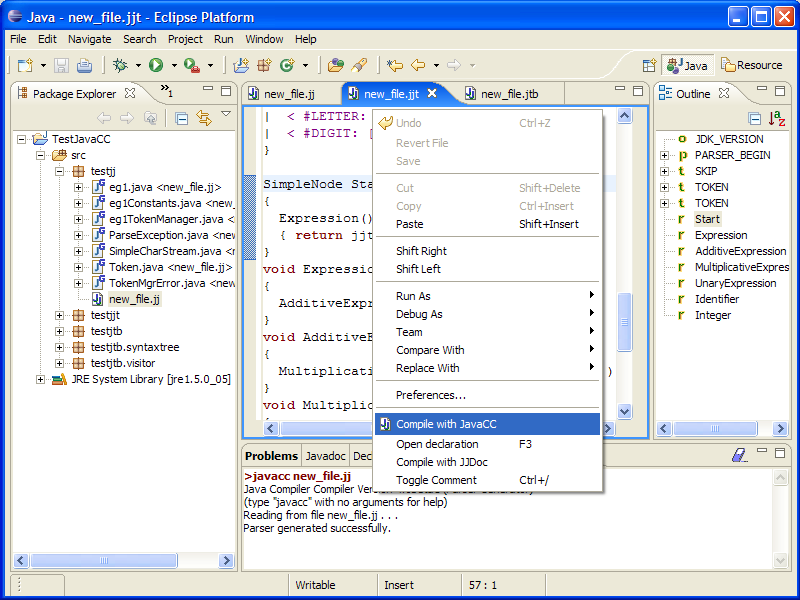

When you edit a .jj, .jjt, or .jtb file you can right clic to open the popup menu and choose "Save"
or if you have not choosen the automatic compilation, or just want to regenerate, choose "Compile with JavaCC".
You can also select the file in the
Navigator or the Package Explorer, right clic to open context menu and choose "Compile with
JavaCC".
